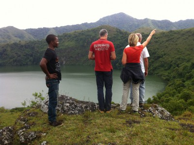

The presence of a touristic site (THE TWIN LAKE)which attract tourist and is good site for relaxation and fun
Bangem is a town and commune in Cameroon. Bangem is the capital of Kupe Muanenguba division (consisting of Bangem, Tombel and Nguti subdivisions) and also considered as the heart-land of the Bakossi tribe. Nestled halfway up Mount Muanenguba and it famous twin lakes, Bangem enjoys a cool comfortable climate and lots of rain. The dry season is short and lasts from November to March, and the rest of the year there are rains. The road network is deplorable and travel in the wet season can be slow and uncomfortable. Bangem has roads to Melong, Tombel and Nguti, but only the Melong-Bangem road is passable by car, the others can be passed on a bike. Bangem is beautiful and has among the most tourist potential of any part of Cameroon. Currently there is a slightly developed tourist site at the crater lakes of Mount Muanenguba (about 10 km uphill from Bangem)that is managed by the Bangem council. But other sites are equally interesting and beautiful, but more inaccessible. The nearby Bakossi National Park boasts of some of the most diverse rain forest, with exceptional species diversity of plants. Furthermore the park has chimpanzees and a large population of drills. Additionally, the nearby Bayang-Mbo Wildlife Sanctuary boasts of forest elephants, chimpanzees, pangolins and other interesting creatures. More information on possible tourist destinations can be found online. Bangem area also is home to many species of interesting birds, reptiles, amphibians and fishes as well. Including the world's largest frog, the Goliath frog, the Mount Kupe Brush Shrike, various species of hornbills etc. Furthermore, the nearby Lake Bermin boasts of the highest species diversity of fishes as compared to the size of the lake, of any lake in the world.[citation needed] The 9 tilapia species are endemic sister species, implying sympatric speciation, making it of critical interest to conservationists and evolutionary biologists alike. The area, however, remains under threat of attack from guerilla forces belonging to the Ambazonia forces that operate in the region and are seeking independence from Cameroon. In 2017, the mayor was kidnapped, and as such, the area in general is unsafe, and a visit at certain times might not be recommended, such as during festivals, when the guerrilla pick up their attacks